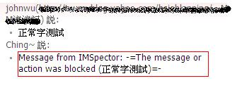

感謝您對「自由軟體鑄造場」的支持與愛護，十多年來「自由軟體鑄造場」受中央研究院支持，並在資訊科學研究所以及資訊科技創新研究中心執行，現已完成階段性的任務。 本網站預計持續維運至 2021年底，網站內容基本上不會再更動。
也紀念我們永遠的朋友 李士傑先生（Shih-Chieh Ilya Li）。
也紀念我們永遠的朋友 李士傑先生（Shih-Chieh Ilya Li）。
以 IMSpector 側錄即時通訊軟體
建立日期 2011-01-10 03:05 最近更新在 2011-01-12 19:45
前言
即時通訊軟體 (Instant Messenger) 的出現，改變了人們溝通的方式，彈指之間，即可將相關訊息傳遞至遠方。但資訊安全往往與便利性相扞格。越便利的使用即代表發生資安危機的機率越高。如過去曾發生某知名大企業內的員工利用即時通訊軟體將企業內的研發機密洩漏給競爭對手，而造成企業極大的損失（目前一般企業還是著重在電子郵件的審查，對於即時通訊的控管倒不是那麼注重）。鑑於即時通訊軟體所衍生的問題，現在一般企業也越來越注重相關問題，而利用內部行政手段（如明令禁止或道德勸說）等方式來防堵即時通訊軟體的使用，有些公司甚至會購買即時通訊側錄軟體來監控即時通訊軟體的使用。但其實一套即時通訊側錄設備的價格並不是那麼親民，也不是每個企業都能負擔的起。因此在本期中，筆者將介紹開源碼社群中的相關解決方案－IMSpector，在本文中即是使用 IMSpector 解決方案來實作一即時通訊側錄解決方案。本解決方案希望能達到下列功能：*可記錄即時通訊軟體交談的訊息
*可禁止即時通訊軟體使用傳遞檔案功能
*可過濾即時通訊軟體訊息內容，當出現敏感的關鍵字時，能即時的過濾
本次解決方案將使用下列開源碼軟體
| 軟體名稱 | 說明 | 官方網址 |
|---|---|---|
| Fedora 11 | 作業系統 | https://fedoraproject.org/ |
| Imspector | 即時通訊系統過濾軟體 | https://www.imspector.org |
什麼是 P2P (peer-to-peer)
以分享的觀點來看，P2P 可說是天生的分享架構。在 P2P 架構中，如下圖示：▲ 圖一
沒有所謂的用戶端或伺服器的角色，只有平等的同級節點 (Node)，各節點可充當用戶端和伺服器等角色。P2P 架構一個最重要的特色即為在架構中的各個節點 (Node) 都能同時提供資源（以檔案下載為例，在 P2P 的架構中有越多人加入，下載的速度就越快，因為加入的節點 (Node) 均會貢獻自己的上傳頻寬），這與傳統的「伺服器端－用戶端」(Client-Server) 的架構不同（傳統的架構是越多人下載，速度就越慢，因為伺服器的負擔就越重）。
什麼是 IMSpector
IMSpector 是一種即時通訊 (Instant Messenger) 側錄軟體，通常安裝在閘道器 (gateway) 上，側錄來往即時通訊軟體的訊息。除了可側錄通訊雙方的通話內容外，IMSpector 並提供關鍵字過濾功能（一旦通話內容含有所設定的關鍵字即會自動攔截並封鎖）及 ACL（Access control list，可用來設定可通訊的用戶對象）及禁止傳遞檔案的功能，據官方網站的說明 IMSpector 可支援下列即時通訊的軟體：1.MSN：這是微軟所開發維護的即時通訊軟體，也是目前應用最廣泛的即時通訊軟體
2.Jabber/XMPP（eXtensible Messaging and Presence Protocol，前身為 Jabber）：是一種以 XML 為基礎的開放式即時通訊協定，XMPP 主要的關鍵特色在於分散式的即時通訊架構，以及使用XML 串流。目前以 Google Talk 為代表性軟體
3.AIM (AOL Instant Messenger)：是一個由 AOL 以廣告收入來支持的個人即時通訊軟體
4.ICQ：意近英文「I seek you（我找你）」，為最早出現的即時通訊軟體之一
5.Yahoo! Messenger：由雅虎 (Yahoo) 開發維護的即時通訊軟體
6.IRC (Internet Relay Chat)：網路聊天室，為最早期的即時通訊軟體
安裝 IMSpector
在本解決方案中，我們需將把 IMSpector 裝在閘道器 (gateway) 上，以記錄來往的即時通訊封包，架構圖如下:▲ 圖二
在此我們將會先利用 iptables 建立 NAT(Net Address Translation) 來實作閘道器功能，並將 IMSpector 軟體安裝在此主機上。
1.建立 NAT 主機
在這邊不多加說明 NAT 的原理，請讀者自行參閱相關文件說明。
請依序下達下列指令：
echo "1">/proc/sys/net/ipv4/ip_forward #開啟主機 ip forward 功能，否則將無法正常的連線
iptables -t nat -A POSTROUTING -o XXX.XXX.XXX.XXX -s 192.168.1.0/24 -j MASQUERADE
（利用 MASQUERADE 功能設定 NAT 功能，在本例中，對外實際 IP 為 XXX.XXX.XXX.XXX，並允許 192.168.1.0 網域的內部主機均能以此真實 IP 上網。請讀者自行依據本身環境自行調整。在設定完成後，讀者可將內部主機的閘道器 (gateway) 指向此台主機，如果可正常上網即表示設定正確。）
2.安裝 IMSpector
即請讀者至 https://www.imspector.org 取得最新版本（截至目前為止，筆者取得的版本為 0.9，解開後請執行下列指令進行編譯與安裝）
make #編譯相關軟體
make install #將相關的檔案安裝至系統上
在安裝完成後，接下來說明 IMSpector 相關的檔案及目錄。如下表所示：
| 檔名 | 說明 |
|---|---|
| /usr/etc/imspector/ imspector.conf | IMSpector 主要設定檔 |
| /usr/etc/imspector/ badwords.txt | 惡意關鍵字列表，凡是在通話內容中含有此檔案所設定的惡意關鍵字，即會被攔截。如在此檔設定「機密」，凡是在通話中有談到機密即會被封鎖 |
| /usr/etc/imspector/ acl.txt | ACL 表，通訊對象控制列表，可在此檔案加上允許通訊或禁止通訊的對象相關格式如下： [allow|deny] id1 id2…. 允許或禁止與某個用戶通訊，如 allow 這個 E-mail 地址已經被防止灌水惡意程式保護，您需要啟用 Java Script 才能觀看 （即是允許與 這個 E-mail 地址已經被防止灌水惡意程式保護，您需要啟用 Java Script 才能觀看 通訊） [allow|deny] all 允許或禁止與所有的用戶通訊 |
| /usr/lib/imspector/ | 放置 IMSpector 相關的程式庫，如下所示： /usr/lib/imspector/*protocolplugin.so （為解析相關即時通訊軟體的程式庫） /usr/lib/imspector/*loggingplugin.so （為記錄相關即時通訊軟體通訊內容的程式庫） /usr/lib/imspector/*filterplugin.so （為過濾相關即時通訊軟體通訊內容的程式庫） |
在完成 IMSpector 安裝後，即可先設定 imspector.conf 中的一般功能參數，如下表示：
| 參數 | 說明 |
|---|---|
| port=16667 | IMSpector 啟動時，所使用的埠，預設為 16667 |
| log_typing_events=on | 設定要記錄交談的訊息 |
| user=root group=root | IMSpector 運作時所使用的權限，在本例僅為實驗需要而使用 root 帳號，在實際上線時，建議讀者使用其它一般帳號。 |
| plugin_dir=/usr/lib/imspector | 設定 IMSpector 程式庫的所在位置 |
| icq_protocol=on irc_protocol=on msn_protocol=on yahoo_protocol=on gg_protocol=on jabber_protocol=on | 開啟 IMSpector 所支援的即時通訊協定 |
由於 IMSpector 運作在 16667 埠，但即時通訊軟體所使用的埠未必是 16667 埠，因此我們需要將即時通訊所使用的埠，利用 iptables 轉埠到 IMSpector 所服務的埠以供 IMSpector 記錄，請讀者下達如下的指令：
iptables -t nat -A PREROUTING -p tcp --destination-port 1863 -j REDIRECT --to-ports 16667
（將送往 MSN 服務埠的資料，轉向到 16667 埠，以供記錄）
iptables -t nat -A PREROUTING -p tcp --destination-port 5050 -j REDIRECT --to-ports 16667
（將送往 YAHOO MESSAGER 服務埠的資料，轉向到 16667 埠，以供記錄）
iptables -t nat -A PREROUTING -p tcp --destination-port 6667 -j REDIRECT --to-ports 16667
（將送往 IRC 服務埠的資料，轉向到 16667 埠，以供記錄）
iptables -t nat -A PREROUTING -p tcp --destination-port 5222 -j REDIRECT --to-ports 16667
（將送往 Jabber/XMPP 服務埠的資料，轉向到 16667 埠，以供記錄）
iptables -t nat -A PREROUTING -p tcp --destination-port 5190 -j REDIRECT --to-ports 16667
（將送往 ICQ/AIM 服務埠的資料，轉向到 16667 埠，以供記錄）
iptables -t nat -A PREROUTING -p tcp --destination-port 8074 -j REDIRECT --to-ports 16667
（將送往 Gadu-Gadu 服務埠的資料，轉向到 16667 埠，以供記錄）
3.啟動 IMSpector
在設定完成後，即可啟動 IMSpector，如下指令：
imspector -c /usr/etc/imspector/imspector.conf
您可以加上 -d 參數（除錯模式，會將所有的記錄訊息顥示在營幕上）
在啟動後，可利用 netstat –an | grep 16667，驗證 IMSpector 是否有正常運作（檢查 16667 埠是否在 LISTEN 狀態，如果在 LISTEN 狀態即表示 IMSpector 已啟動成功（正在 16667 埠服務），如下圖示：
▲ 圖三
接下來，我們將以微軟的 MSN 軟體為例來測試相關的功能，我們將測試下列情況：
1.記錄 MSN 交談訊息
2.設定關鍵字過濾，一旦發現 MSN 交談的訊息含有關鍵字即封鎖
3.設定 ACL 控制以限制 MSN 所能連接的對象
4.其它功能（禁止傳檔）
以檔案記錄 MSN 交談訊息
請讀者按照下列步驟實作：1.用戶端主機需將預設閘道 (gateway) 指向 IMSpector 所在的主機
2.利用 MSN 與遠方友人通訊完後，在 /var/log/imspector 下即會記錄相互交談的記錄，
目錄的排列格式如下：
{protocol}/{local id}/{remote id}/{year}-{month}-{day}
其中 protocol 為所使用的通協協定，在本例即為 MSN
Localid：為本地端的用戶帳號
Remoteid：為通訊對方的用戶帳號
yy-mm-dd：記錄的訊息以通訊日期為檔名
如與遠方的 badabge 連絡，目錄名稱即為 /MSN/johnwu/badabge/，相關的記錄檔即會置於此目錄下
記錄檔名稱即為 yyyy-mm-dd
記錄的訊息格式（以 csv 格式區分各欄位）如下圖示：
▲ 圖四
格式說明如下：
(1)ip:port ：用戶端的主機 IP 及埠
(2)UNIX 格式的主機時間
(3)1：表示發出的訊息 0：表示接收到的訊息
(4)事件型態：
1：表示傳送文字訊息
2：表示正在傳輸檔案
3：表示使用者正在輸入文字
4：表示使用者使用 WEBCAM
(5)0：表示此訊息沒有被過濾掉，1：表示此訊息已被過濾
(6)訊息的種類，通常如果有設定過濾惡意字功能，當訊息內容含有惡意關鍵字時，會在此欄位填上 badword 等種類字串。否則在一般的情況下，此欄位會為空。
(7)當使用檔案傳輸時，傳輸的檔名及長度會寫入此欄位
(8)側錄到的交談內容（如上例的 test，中文測試等字串）
設定惡意字串，以過濾惡意的即時通訊內容
1.設定/usr/etc/imspector/imspector.conf如下的參數badwords_filename=/usr/etc/imspector/badwords.txt
（存放惡意字列表的檔案，您可將欲過濾的惡意字存放至此檔案）
badwords_replace_character=*
（當惡意字出現時，可用來取代的文字）
badwords_block_count=1
（當惡意字出現的次數達到此設定值時即封鎖訊息，不然即僅置換惡意字，如上例為，即使只出現一次欲過濾的惡意字也會封鎖）
filtered_response=The message or action was blocked
（當訊息被封鎖時，顯示給使用者的文字訊息）
2.設定 /usr/etc/imspector/badwords.txt，將「豬頭」加入到此檔案中
3.利用 MSN 與好友談天，假如內容含有惡意字，即會出現如下圖的警示訊息
▲ 圖五
設定 ACL 以限制 MSN 所能連接的對象
1.設定 /usr/etc/imspector/imspector.conf 如下的參數acl_filename=/usr/etc/imspector/acl.txt ＃可限定可通訊的對象
acl.txt 格式如下：
prefix：參數
prfix：有 deny（拒絕）及 allow（允許）兩種選項
參數：有 all（指所有的用戶）或個別的用戶
如 deny all（即拒絕所有用戶的連接），一般我們會使用「正面表列」或「負面表列」的方式來設定。
如正面表列（原則禁止，例外通行。即只允許與特定對象通訊，其餘一概禁止。）
allow 這個 E-mail 地址已經被防止灌水惡意程式保護，您需要啟用 Java Script 才能觀看 （允許連接的用戶名稱）
allow 這個 E-mail 地址已經被防止灌水惡意程式保護，您需要啟用 Java Script 才能觀看 （允許連接的用戶名稱）
deny all #禁止所有的通訊
負面表列（原則通行，例外禁止。即不允許與特定對象通訊。）
deny 這個 E-mail 地址已經被防止灌水惡意程式保護，您需要啟用 Java Script 才能觀看 #禁止連接用戶名稱
allow all #允許所有的通訊
在設定完成後，如果利用 MSN 去連接被禁止的用戶，將會出現如下圖示的警示文字訊息。

▲ 圖六
設定 ACL 以限制 MSN 所能連接的對象
在 /usr/etc/imspector/imspector.conf 設定如下的參數block_files=on #禁止即時通訊軟體傳檔的功能
設定完成後，使用者即無法使用檔案傳輸的功能
結論
在本解決方案中，筆者僅簡單的介紹以檔案方式儲存相關的通訊內容。而在 IMSpector 中也有提供以資料庫（支援 MySQL，PostgreSQL）來儲存相關的通訊內容，以供側錄資料能更有效的被運用。從另一個角度思考，也許讀者可結合前期筆者所介紹的 Logfmon（偵測檔案異動軟體），而實作出一個當偵測到惡意字時，即會發出 email 通知管理者，來增強 IMSpector 的功能。專欄總覽


自由軟體鑄造場 製作 最佳瀏覽狀態：IE7或Firefox2.0以上 (建議使用Firefox) ‧ 解析度1024*768
E-Mail：contact@openfoundry.org Address：台北市南港區研究院路2段128號 中央研究院資訊科學研究所 . 隱私權條款. 使用條款
E-Mail：contact@openfoundry.org Address：台北市南港區研究院路2段128號 中央研究院資訊科學研究所 . 隱私權條款. 使用條款